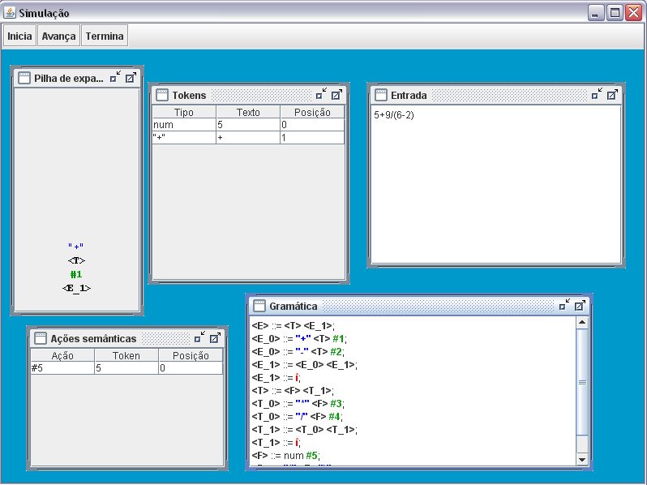

SIMULAÇÃO DA ANÁLISE LL(1)
Na simulação da análise sintática LL(1), o usuário deverá declarar as especificações léxicas e sintáticas.
Na tela da simulação sintática possuem as telas de “Entrada” onde o usuário deverá definição uma entrada de teste para a simulação, a tela “Tokens”, onde será visualizado os tokens reconhecidos, o tipo e a posição que pertence, a pilha de expansão, a gramática já simplificada e as ações semânticas reconhecidas.

Após a definição da entrada o usuário para começar o processo deverá clicar no botão “Inicia”, ele poderá optar em demonstrar o passo a passo da análise clicando no botão “Avança” até chegar ao fim da análise ou visualizar o resultado final da análise clicando no botão “Termina”.